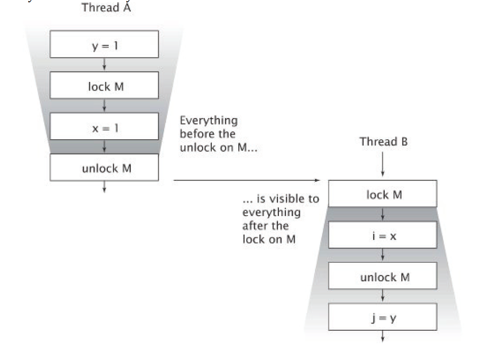
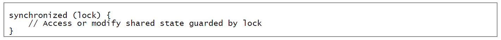
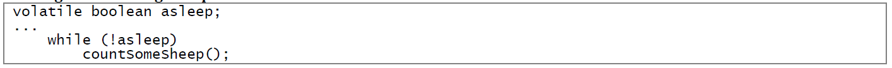
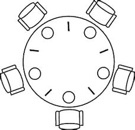
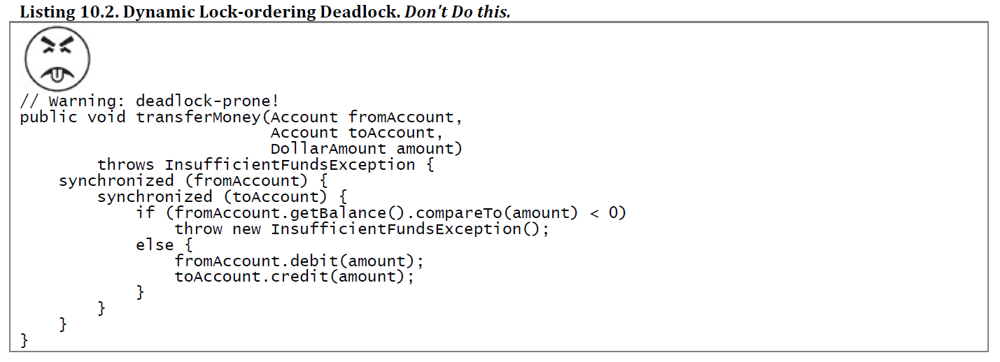

一个并发的应用程序有两个重要的性质，安全性与活跃性，由于安全性的需要，并发程序引入了锁机制，俗称“加锁”。 “加锁”充分提高了程序的安全性，它是以牺牲掉程序效率的方式来实现的，即降低了其活跃性。 锁的不合理使用还会导致线程阻塞，相互永久等待，也就是我们称的“死锁”，它是一种活跃性风险。 我们需要正确地使用锁机制，避免“死锁”，又保证线程安全，实现安全性与活跃性之间的平衡，这是编写并发程序的关键。

以上谈到了为什么要加锁，而且是要正确地加锁。接下来我们谈一下Java的内部锁机制，同步代码块（Synchronized Block）和Volatile变量。
-
在Java语法上，通过使用synchronized关键字来实现同步代码块，关键字synchronized可以用来修饰方法，得到横跨整个方法体的同步代码块。

其中同步代码块的锁就是方法调用的对象，也可以作为静态的synchronized方法来实现，同时以Class对象作为锁。
在Java中，在同一个时刻，只能有一个线程能够持有这种锁。当线程A尝试获取线程B持有的一个锁时，线程A必须等待或者阻塞，直到线程B释放这个锁，如果线程B永远不释放这个锁，那么线程A将永远地等待下去。 -
volatile变量是一种比synchronized关键字更轻量级的同步机制。
编译器会注意到volatile变量是共享的，不会将该变量上的操作和其他内存操作一起重排序。volatile变量不会被缓存在寄存器或者其他处理器不可见的地方，因此在读取volatile类型的变量时，总是会返回时刻最近的那个线程写入的最新值。

对比同步代码块，从内存可见性的角度来看，写入volatile变量相当于退出同步代码块，读取volatile变量相当于进入同步代码块。
应用了锁机制后，我们的程序安全性得到了保证，然而程序就完美了么？显然我们可能会碰到更严峻的活跃性风险，死锁。 我们这样来理解死锁的定义，当两个一样优秀的男生都在追求同一个女孩时，女孩无法选择，于是两个男生都将永远地等待下去。在计算机世界，永远地等待，以为着程序成为了“植物人”，失去了任何意义。

接下来，我们具体谈一下“死锁”，在实际情况中，死锁又分为以下几种情形：锁顺序死锁、动态锁顺序死锁、在协作对象时发生的死锁。
-
锁顺序死锁，线程A得到了Left锁，尝试获得Right锁，于是等待。与此同时，线程B得到了Right锁，尝试获得Left锁，于是等待。它们都想要得到对方的锁，才能继续运行，所以它们永久地等待下去。
锁顺序死锁发生的原因就是因为两个方法中获得锁的顺序不一致所导致的。

-
动态锁顺序死锁，我们可能汲取了锁顺序死锁的教训，在代码中只写一种方法，但是我们被锁的对象却是动态的，一前一后，实际上还是有两种锁顺序不一致的线程。
 - 在协作对象时发生死锁，虽然我们没有在一个方法内放置两个锁，但是在程序协作对象时，依旧可能出现，线程A得到对象a的锁，尝试获得对象b的锁，于是等待，线程B得到了对象b的锁，尝试获得对象a的锁，于是等待。锁顺序依旧不同，继而导致死锁。
以上“死锁”的危害足够引起我们的重视，那么我们应该如果避免死锁呢？或者程序bug了，我们如何诊断死锁呢？ 从预防说起，一个完美的但不现实的方法是，在一个程序中，我们应该只使用一个锁。这样自然不会出现锁顺序不同的问题，避免了Deadlock。 当我们需要用到多个锁时，在设计时应该尽量避免多个锁的交互使用，将获得锁时所要遵循的协议写入正式的文档，并始终遵循这种协议。 设计完成后，我们应该采取这样一个策略来检查，首先，找到使用多个锁的位置，然后对所有的实例进去分析，确保所有预想到的实例的锁顺序都是一致的。 同时，我们在设计被调用的方法时，不要让调用者必须先获得锁，才能调用。这种设计也叫做是开放调用。

当程序真正发生死锁时，该怎么办？JVM提供了线程转储（Thread Dump）来帮助识别死锁的发生。 线程转储包括了各个运行中的线程的栈追踪信息，还包含了加锁信息。 它能够通过搜索循环来找出死锁，如果发现了一个死锁，则会获取相应的死锁信息，以及这个锁的获取操作是在程序的哪个位置。许多IDE都集成了线程转储功能，诊断死锁问题，这无疑是一把超级好用的手术刀。